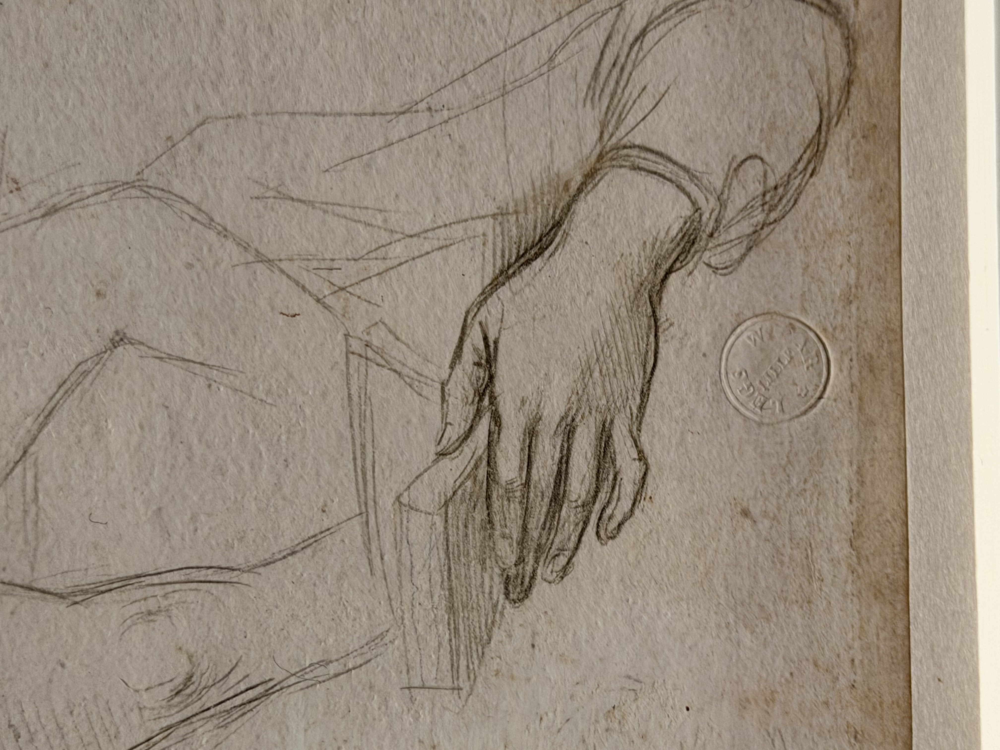

I like this close-up of Raphael's hand very much. His line style is very soft, and the depiction of shadows makes the hand three-dimensional. The outline of the hand looks plump and soft, as if you can see the delicate skin.